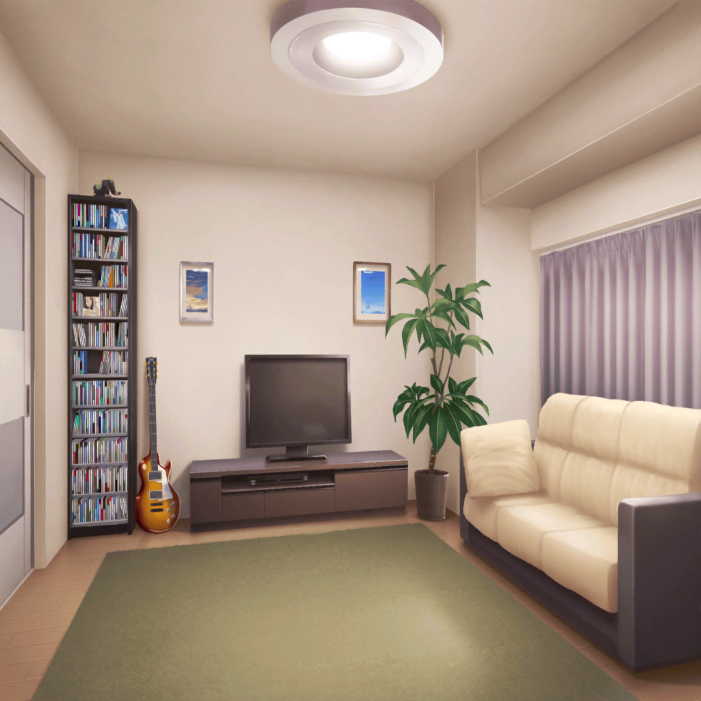

リサ
ひっさしぶりのお泊り会だねっ♪
友希那
…………
リサ
えっ。なにその微妙な顔、
リサちゃん傷つく～♪
友希那
もう高校生よ。
一晩くらいどうってことないのに
リサ
ダメダメ。
旅行に行くお父さんお母さんから、練習で
家に残るならアタシとって条件出されたんでしょ？
リサ
それに友希那、家事ヘタじゃん？
友希那
ヘタ……
うちは分担制で、料理はおか、母の係りなのよ
リサ
ふーん？
で、友希那の係はなんだっけ？
友希那
…………
洗い物は……たまにできるわ
リサ
まぁいいじゃん。
アタシが友希那の好きなもの
作ってあげるから、期待してて♪
友希那
だけど、リサ……
リサ
ほら早く！ スーパー行くよっ
友希那
（……ただでさえ、
最近指がボロボロなのに、こんなこと……）

友希那の家
リサ
それじゃあ、
友希那リクエストのシチュー
作りま～～～す♪
友希那
私だって手伝いくらいできるわ。
……皮むき、とか？
リサ
ええっ。ウソ、本当に！？
友希那も大人になったんだねえ～。
リサちゃん、感動っ♪
リサ
じゃあアタシは他のことやっておくから、
ジャガイモの皮むき、よろしくね。
はい、ピーラー♪
友希那
（咄嗟に言ってしまったけど……
包丁はもちろん無理だし
これもあまり得意じゃない……）
友希那
（でも、こんな指の
リサに一人でやらせるわけには）
リサ
昔はしょっちゅう、
友希那んちのお父さんお母さんが遅い日、
こうやって二人で夕飯作って、お泊り会したよね
友希那
そうね……
友希那
いまと同じで、
ほとんどリサがつくっていたけど……
友希那
リサは昔から、料理が上手かったから
リサ
え、えへへっ。まあね。
うちはお母さんと一緒につくる家だから
リサ
友希那も昔から、歌は上手かったよね。
アタシはベース、最初はボロボロだったけど
友希那
そうだった？
リサ
そうだよ。
あっ、剥いた皮はここに集めておいてね、
あとでアタシ片づけるから
リサ
それと、ほうれん草あるけど
食べれるようになったんだっけ？
友希那
…………
リサ
あたし、今でも覚えてるよ。
友希那のお父さんのギターに合わせて
友希那が歌って……2人でハモって……
リサ
元々、上手いなって思ってたけど、
あーこれがプロなんだなって、
小学生ながらに思ったわー
友希那
小学生でプロは大げさだわ
リサ
でも！
わかるんだよ『ぜったいに違う』ってのが
友希那
…………
友希那
（ジャガイモ、皮を剥いたら
少し小さくなってしまったけど、
大丈夫かしら……）
リサ
だからね、その時アタシ、
お父さんが持ってるギターと、２人の声聞いて、
とっさに、ボーカルとギター以外がいいって
リサ
今思えばプロのミュージシャンに対して
けっこうナマイキだよね
リサ
でも、そのおかげで今、
友希那の隣でベースが弾けてるんだもんね
リサ
最初は全然できなくて、
こんなことなら、下手でも友希那と一緒に
歌えばよかったーなんて思ってたけど
リサ
今はあの時の友希那のお父さんにも、
友希那にも、すっごく感謝してるんだ♪
リサ
アタシがどんなにヘタでも、
ずーっと付き合ってくれたもんね、２人とも
友希那
……『練習は裏切らない』から。
私もお父さんも、
初めから上手かったわけじゃない
友希那
上達の仕方も、速度も人それぞれよ。
１回聞いてマスターできるタイプ、
１から５０までは早いのにそこから伸びないタイプ……
友希那
初めは時間がかかるけど、
身体で覚えて、一度身に着けたら二度と忘れないタイプ。
リサはこれね
リサ
えっ。そうかな？
お肉って鶏肉でいいんだよね
友希那
脂身はあんまり入れないで
友希那
そうよ。だって、
ブランクがあったのに、
すぐに私達のレベルに追い付いたじゃない
リサ
あはは……
あれは本当にもう、必死だったからね
友希那
必死に……
たとえ元の能力が桁外れでなくても、
常に１２０％の力を出せるのは才能よ
友希那
人に誇っていい部分だと思うわ
リサ
え、えへへ……
なんかそうやってストレートに
褒められると、困っちゃうよぉ♪
友希那
他のことに集中しているせいかしら。
考えるより先に、
思ったことを言ってしまうようね
友希那
（料理……
ほとんどやったことなかったけれど、
少し……楽しいかもしれない）
リサ
――って友希那！？
ここにあったジャガイモは！？
友希那
今、ちょうど
すべて皮を剥ききったところよ
リサ
ええっ！
だってこれ半分くらいしかないよ。
残り半分どこ行っちゃったの？
友希那
そこの皮ね
リサ
厚っ！！
ピーラーでどうやったら
こんな厚く剥けるの……
友希那
私はただ、
皮を剥いただけだわ。
誰にも文句を言われる筋合いなんてない
リサ
あります！！
もーこんなんじゃいつまでもお母さん頼みだよ？
まず、持ち方から直すから
友希那
い、いいわよ別に、料理なんて
リサ
『練習は裏切らない』んでしょ？
じゃあそこの人参とって！
友希那
（私としたことが、
余計なことを言ったわ……）